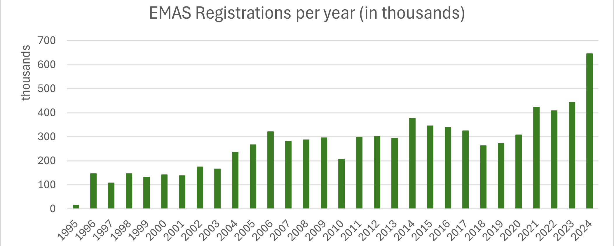

Distinguishing the good guys from the bad ones is getting more difficult by the day. It seems as if green has become everyone’s favourite color: at least if you look at packaging, advertisements, websites, or any other signal from companies to stakeholders. Brands are giving out reassuring promises of sustainability and environmental friendliness, nicely printed in a forest green font. Whether it be Fair Trade, FSC, ASC, ISO-14001, EU Ecolabel or Rainforest Alliance’s cute little frog, the more of these shiny stickers you have to hide under, the better. How do you collect them? Not as relevant. Take H&M’s “Conscious Collection,” for example - a line marketed as sustainable, yet criticized for still relying on fast-fashion overproduction (BBC, 2021). Or Nestlé’s pledge to make 100% of its packaging recyclable by 2025, while remaining one of the world’s top plastic polluters (Break Free From Plastic, 2022). Even oil giants like BP and Shell have rebranded with leafy logos and vague net-zero commitments, despite continuing to expand fossil fuel extraction (The Guardian, 2023). It almost feels like the more a company shouts about sustainability, the harder one should squint at the fine print. The problem isn’t just misinformation (unintentional false claims) but disinformation - strategic deception dressed as progress. And with every new certification or green buzzword, the line between real change and misleading PR gets blurrier.
While the use of environmental certificates, such as the ISO-14001 and EMAS (Eco-Management and Audit Scheme) in the EU, is getting more popular by the day (see Figure 1), has their significance suffered inflation? Were they ever of any value at all? Testa et al. (2015) juggle these questions in their study on the internalization of environmental practices and stakeholder pressure. The article examines whether stakeholder pressures encourage companies to genuinely adopt environmental practices or just engage in “greenwashing”, i.e. superficially adopting practices for appearances without real impact. The authors ran a survey and got 232 responses from EMAS-registered organizations. The survey asked managers to e.g. rate the importance of each stakeholder on the organization’s decision to adopt environmental actions. Their main interest is in the external and internal factors affecting how truly the EMAS requirements are actually internalized in an organization. External factors consist of a list of stakeholders, including banks, customers, suppliers, shareholders etc. The internal ones include price and quality, meaning whether organizations use cost savings or quality management as the key strategy to improve competitiveness.
The findings of Testa et al. (2015) reveal that the pressure of stakeholders depends crucially on which stakeholders are being looked at. The observed differences are quite surprising. Shareholders, suppliers, and financial institutions push for meaningful environmental improvements, while customers and industrial associations may inadvertently encourage greenwashing by prioritizing certification over actual performance. Furthermore, companies with a strong focus on product quality are more likely to internalize environmental practices, whereas ones with cost-saving strategies show no significant effect. This is more in line with what one might expect: quality-driven firms see environmental practices as complementary to their business goals, whereas cost-saving ones may view them as a trade-off.

The question of what constitutes “improved environmental performance” and how it is measured remains a key challenge in sustainability research. Some studies, like Melnyk et al. (2003), use concrete metrics such as reduced waste or emissions and find a positive impact, while others, like Barla (2007), find no clear link between EMS adoption and actual environmental gains. This inconsistency could mean that performance improvements depend on how deeply environmental practices are internalized - beyond mere certification. So Testa et al. (2015) are asking exactly the right questions; as they note, “the conflicting findings of the literature […] could be related to the uncertain internalization [of EMSs]”. They also talk about symbolic corporate environmentalism, which further complicates this issue. The term refers to a sneaky form of greenwashing that is subtle and systemic - less visible than outright misinformation but equally problematic. Bowen and Aragon-Correa (2014) describe it as a disconnect between policy and practice, where firms adopt EMSs for legitimacy without operational change.
It would have been valuable for the study to explore how stakeholder pressures vary across industries - for example, whether manufacturing firms face different pressures from customers than the food industry. And while we’re at it, potential differences in stakeholder pressures between firms with cost-saving versus quality-focused strategies could also be interesting to see. Such an analysis could reveal whether the differences in who internalizes systematically and who symbolically is connected to the industry. Without this breakdown, the study’s findings remain broad, missing opportunities to pinpoint where stakeholder pressures actually translate into real environmental action - and where they don’t.
So, does the Testa et al. (2015) provide any useful evidence? This study investigates two key questions: 1. which external (stakeholder pressures) and internal (corporate strategy) factors influence the real adoption of EMAS environmental practices, and 2. whether the internalization of EMAS requirements - measured through planning, operational activities, training, and monitoring - truly reflects meaningful environmental commitment or just superficial compliance. However, surveys are always surveys. The unfortunate caveat of this method is that it only answers the research question if we believe that respondents were objective robots. There is an existing and rather likely possibility that the responses are influenced by willingness to maintain a positive firm image. This would lead to the coefficients being consistently too high. Another issue with the data is that survey-based perceptions of stakeholder influence might not align with reality. While a stakeholder is thought to have a lot of influence on organizational behavior, their actual power over firms’ environmental actions remains unclear. To answer this question, further studies should be conducted. With quantitative data on environmental outcomes of firms, the study would be even more convincing - but gathering this data is easier said than done.
References
BBC (2021, October 12). H&M: Can fast fashion ever be sustainable?
Break Free From Plastic (2022). Brand Audit Report 2022.
The Guardian (2023, February 8). Revealed: How Shell and BP are secretly resisting climate action.
EPA (2015). EPA, California Notify Volkswagen of Clean Air Act Violations.